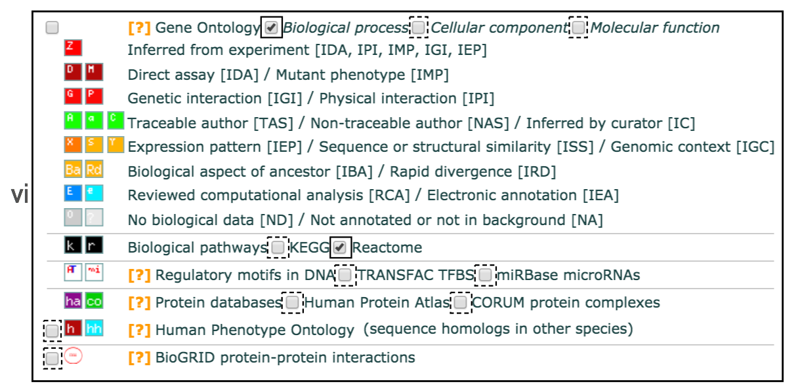
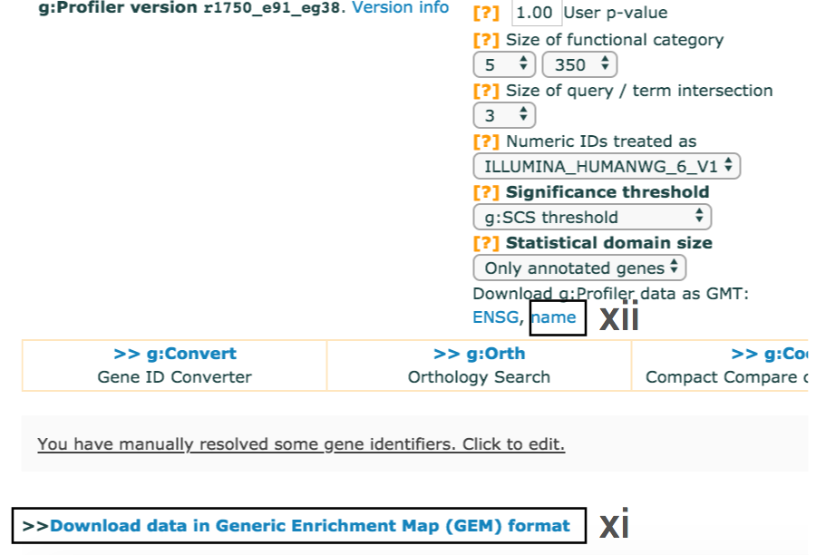
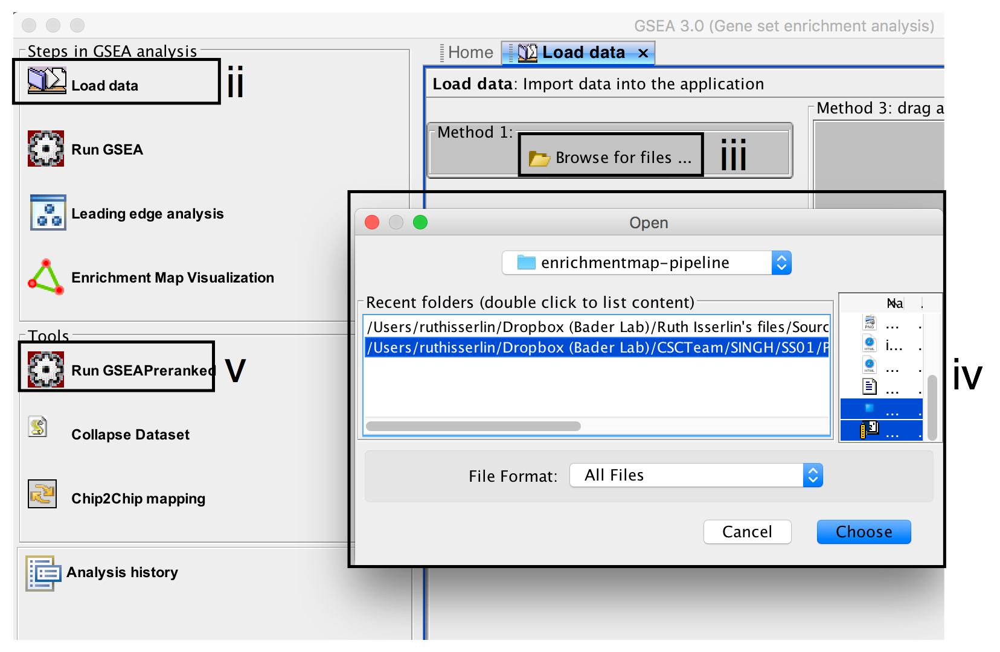
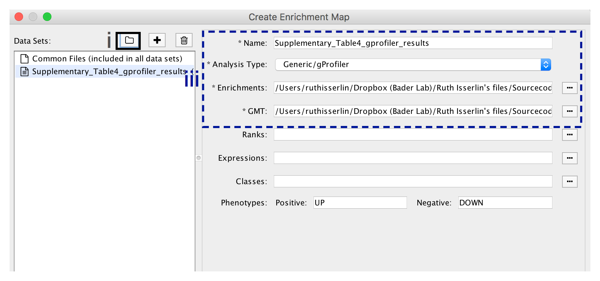
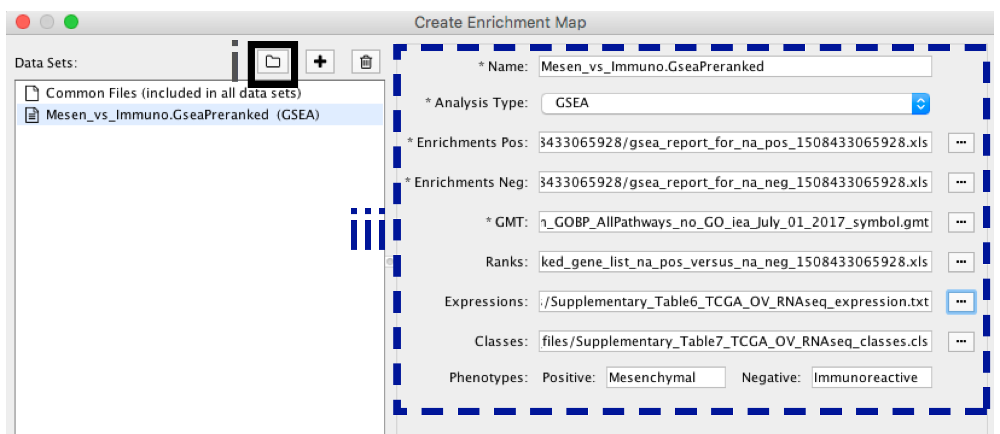
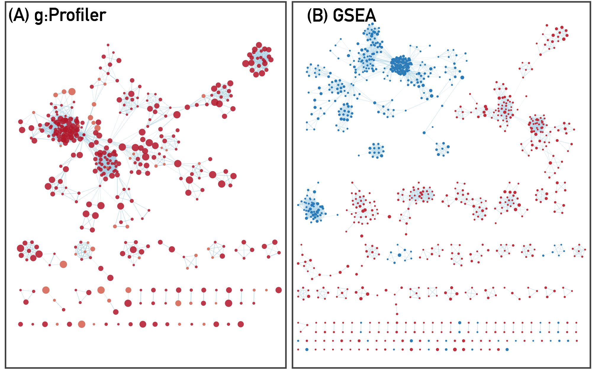

Pathway enrichment analysis and visualization of omics data using g:Profiler, GSEA and Enrichment Map in Cytoscape
This step-by-step protocol explains how to complete pathway enrichment analysis using g:Profiler (filtered gene list) and GSEA (unfiltered, whole genome, ranked gene list), followed by visualization and interpretation using EnrichmentMap.
- g:Profiler
- - is a web-based thresholded pathway enrichment tool
- Gene Set Enrichment Analysis(GSEA)
- - is a desktop application that analyzes ranked gene lists using a permutation-based test
- EnrichmentMap
- - is a Cytoscape app that visualizes the results from pathway enrichment analysis

Software Requirements
- A contemporary web browser (e.g. Chrome) for pathway enrichment analysis with g:Profiler.
- Java Standard Edition required to run GSEA and Cytoscape.
- GSEA desktop application for pathway enrichment analysis.
- Cytoscape desktop application required for enrichment map visualization. Refer to the manual for a basic introduction.
- The following Cytoscape apps:
- EnrichmentMap- version 3.1 or higher,
- clusterMaker2- version 0.9.5 or higher,
- WordCloud- version 3.1.0 or higher,
- AutoAnnotate- version 1.2.0 or higher.
- The above can be conveniently downloaded and installed together by installing the “EnrichmentMap Pipeline Collection” from the Cytoscape App Store.
Data
We provide downloadable example files referred throughout the protocol (You can also download all the data file at once here. We recommend saving all these files in a personal project data folder before starting. We also recommend creating an additional result data folder to save the files generated while performing the protocol.
- A gene list (g:Profiler)
- A list of genes with frequent somatic single nucleotide variants (SNVs) identified in The Cancer Genome Atlas (TCGA) exome sequencing data of 3,200 tumors of 12 types.The MuSiC cancer driver mutation detection software was used to find 127 cancer driver genes that displayed higher than expected mutation frequencies in cancer samples. Genes are ranked in decreasing order of significance (FDR q-value) and mutation frequency
- Supplementary_Table1_Cancer_drivers.txt
Data - continued
- A ranked gene list of interest(GSEA)
- A list of differentially expressed genes in two subtypes of ovarian cancer defined by TCGA.
- An RNK file is a two-column text file with gene IDs in the first column and gene scores in the second column. All (or most) genes in the genome need to have a score and the gene IDs need to match those used in the GMT file.
- Supplementary_Table2_MesenvsImmuno_RNASeq_ranks.rnk
- Pathway gene set database(Baderlab genesets)
- Contains a database of pathway gene sets used for pathway enrichment analysis in the standard GMT format, downloaded from http://baderlab.org/GeneSets. This file contains pathways downloaded on July 1, 2017 from eight data sources: Gene Ontology, Reactome, Panther, NetPath, NCI, MSigDB curated gene sets (C2 collection, excluding Reactome and KEGG), MSigDB Hallmark (H collection) and HumanCyc.
- A GMT file is a text file where every line represents a gene set for a single pathway. Each line includes a pathway ID, name and the list of associated genes in a tab-separated format.
- Supplementary_Table3_Human_GOBP_AllPathways_no_GO_iea_July_01_2017_symbol.gmt
Setup
Dowanload and install the required software. Download the required input and output files from the supplementary materials of the protocol.
- Download the required input and output files from the supplementary materials of the protocol.
- Create two directories, project data folder and results data folder.
- Place all downloaded input and example output files into the project data folder.
- As you progress through the protocol place any newly generated files into the results data folder.
- Install Java Version 8 or higher if not already installed.
- Download the latest version of GSEA. We recommend the javaGSEA desktop application.(Free registratio is required)
- Download the latest version of Cytoscape. Cytoscape version 3.6.0 or higher is required.
Cytoscape Setup
- Launch Cytoscape. Refer to the manual for a basic introduction.
- Go to Apps --> App Store --> Show App Store.
- In the search bar, search for “EnrichmentMap”.
- In the results in the web browser, select the
EnrichmentMap Pipeline Collection . Verify that it is version 1.0.0 or higher.- Click on the Install button.
- Back in Cytoscape, check the list Installed Apps and verify that the apps (EnrichmentMap, clusterMaker2, WordCloud and AutoAnnotate) have been installed.
Determine best Pathway Analysis Method
Two major types of gene lists are used in pathway enrichment analysis of omics data. Select A or B, depending on the type of gene list you have.
A. Flat (unranked) gene lists
- g:Profiler
- a statistical threshold is required.
- Partial, filtered ranked gene lists can also be analyzed with g:Profiler.
- Alternate tools: David, ToppGene, Enrichr, GREAT, EnrichmentTable
6A. Pathway enrichment analysis of a gene list using g:Profiler
- Open g:Profiler
- Launch Browser
- Open the g:Profiler website at http://biit.cs.ut.ee/gprofiler/
6A. g:Profiler - Input data and set parameters

- Paste the gene list (gprofiler_genelist_Cancer_drivers.txt) into the Query field in top-left corner of the screen.
- Check the box next to Ordered query.
- Check the box next to No electronic GO annotations.
- Click on Show Advanced Options
6A. g:Profiler - Input data and set parameters - cont'd
- Set filters on gene annotation data using the legend on the right. We recommend that initial pathway enrichment analyses only includes biological processes (BP) of GO and molecular pathways of Reactome. Keep the two checkboxes checked and uncheck all other boxes in the legend.
6A. g:Profiler - Input data and set parameters - cont'd

- Set the dropdown values of Size of functional category to
5 (‘min’) and350 (‘max’) . Large pathways are of limited interpretative value, while numerous small pathways decrease the statistical power because of excessive multiple testing. - Set the dropdown Size of query/term intersection to
3 . The analysis will only consider more reliable pathways that have three or more genes in the input gene list. - Click g:Profile! to run the analysis.
- A graphical heat map image will be shown with detected pathways shown along the y axis (left) and associated genes of the input list shown along the x axis (top). Resulting pathways are organized hierarchically into related groups.
- g:Profiler returns only statistically significant pathways with p-values adjusted for multiple testing correction (called q-values).
- By default, results with q-values below 0.05 are reported.
6A. g:Profiler - Input data and set parameters - cont'd

- Use the dropdown menu Output type and select the option
Generic Enrichment Map (TAB) . This file is required for visualizing pathway results with Cytoscape and EnrichmentMap. - Click g:Profile! again to run the analysis with the updated parameters.
- The required link Download data in Generic Enrichment Map (GEM) format will appear under the g:Profiler interface.
6A. g:Profiler - Input data and set parameters - cont'd
- cont'd - Download enrichment file.
- Download the file from the link and save it on your computer in your result data folder created in Step 1i. Example results are provided in Supplementary_Table4_gprofiler_results.txt.
- Download the required GMT file by clicking on the link name at the bottom of the Advanced Options form. The GMT file is a compressed ZIP archive that contains all gene sets used by g:Profiler (e.g., gprofiler_hsapiens.NAME.gmt.zip).
- The gene set files are divided by data source.
- Download and uncompress the ZIP archive to your project folder.
- All required gene sets for this analysis will be in the file hsapiens.pathways.Name.gmt (Supplementary_Table5_hsapiens.pathways.NAME.gmt).
- Place the saved file in your result data folder created in Step 1i.
6B. Pathway enrichment analysis of a ranked gene list using GSEA
- Launch GSEA by opening the downloaded GSEA file (gsea.jnlp)
Troubleshooting - GSEA launch
- macOS for the first time,
- error “gsea.jnlp cannot be opened because it is from an unidentified developer”.
- Click on “Ok”.
- Instead of double clicking on the gsea.jnlp icon/file, right click and select “open”.
- The same error will appear but this time it will give you the option to “Open” or “Cancel”. Click on “Open”.
- After this initial opening, subsequent double clicks on gsea.jnlp will launch GSEA without errors or warnings.
- If GSEA still fails to launch through the Java Web Start downloaded from the GSEA website,
- GSEA can alternatively be launched from the command line.
- Go to the GSEA download site and download javaGSEA JAR file.
- Open a command line terminal.
- navigate to the directory where the file javaGSEA.jar was downloaded.
- Run the command "java –Xmx4G –jar gsea-3.0.jar".
6B. Pathway enrichment analysis of a ranked gene list using GSEA - cont'd
- Click on Load Data in the top left corner in the Steps in GSEA Analysis section.
- In the Load Data tab, click on Browse for files …
- Find your project data folder and select the file ranked genelist file.
- Also select the pathway gene set definition (GMT) file using a multiple select method such as shift-click (genesets gmt file).
- Click the Choose button to continue.
- A message box indicates that the files were loaded successfully. Click the OK button to continue.
- Click on Run GSEAPreranked in the side bar under Tools.
Troubleshooting - GMT files
- TROUBLESHOOTING: GSEA may seem non-responsive but it is actually loading in large files.
- Possible reason:Large GMT file
- It may take 5-10 seconds for GSEA to load input files. The files are loaded successfully once a message appears on the screen “Files loaded successfully: 2/2. There were no errors”.
- TROUBLESHOOTING: How to use MSigdb or alternate GMT files.
- GSEA also supplies its own gene set files that are accessible directly through the GSEA interface from the MSigDB resource.
- These files do not need to be imported into GSEA. When you define the GMT file, the MSigDB gene set files can be found in the first tab “Gene Matrix (from website)” of the “Select one or more genesets” dialog. The latest versions of the MSigDB gene set files are in bold but previous versions can also be accessed. To select multiple gene set files, use multi-file select by simultaneously clicking on the desired files and holding the control key on Windows or command on macOS.
6B. Pathway enrichment analysis of a ranked gene list using GSEA - cont'd
- Gene sets database –
- click on the button (…) located to the right and wait a few seconds for the gene set selection window to appear.
- Go to the Gene matrix (local gmx/gmt) tab using the top right arrow.
- Click on the downloaded local GMT file Supplementary_Table3_Human_GOBP_AllPathways_no_GO_iea_July_01_2017_symbol.gmt(click for info on data files) and click on OK at the bottom of the window.
-
- Number of permutations – number of times that the gene sets will be randomized to create the null distribution to calculate the p-value and FDR q-value. Use the default value of 1000 permutations.
- Ranked List – select the ranked gene list by clicking on the right-most arrows and highlighting the rank file(Supplementary_Table2_MesenvsImmuno_RNASeq_ranks.rnk)(click for info on data files).
- Click the Show button next to Basic fields to display extra options.
Troubleshooting - Permutations
- TROUBLESHOOTING: Increasing the number of permutations will increase computation time.
- The higher the number of permutations, the longer the analysis will take.
- To calculate the FDR q-value for each gene set, the data is randomized by permuting the genes in each gene set and recalculating the p-values for the randomized set. This parameter specifies how many times this randomization is done.
- The more randomizations are performed, the more precise the FDR q-value estimation will be (to a limit, as eventually the FDR q-value will stabilize at the actual value). On a Windows machine with 16G of RAM and i7 3.4 GHz processor, an analysis with 10, 100, 500, or 1000 randomizations on our example set with above defined parameters takes 155, 224, 544, and 1012 seconds, respectively.
6B. Pathway enrichment analysis of a ranked gene list using GSEA - cont'd
- Analysis name – change default “my_analysis” to a specific name, for example “Mesen_vs_Immuno”.
- Max size: exclude larger sets – By default GSEA sets the upper limit to 500. Set this to 200 to remove the larger sets from the analysis.
- Save results in this folder – navigate to the folder where GSEA should save the results. We recommend you choose the result data folder created in Step 1i. Otherwise, GSEA will use the default location gsea_home/output/[date] in your home directory.
6B. Pathway enrichment analysis of a ranked gene list using GSEA - cont'd

- Run GSEA – click on the Run button located at the bottom of the window.
- The GSEA reports pane at the bottom left of the window will show the status “Running”.
- It will be updated to “Success” upon completion.
- This is expected to be a long running process, depending on the speed of your computer.
Troubleshooting - Running GSEA
- TROUBLESHOOTING: GSEA looks non-responsive but it is actually computing enrichments.
- Possible reason: No progress bar.
- GSEA has no progress bar to indicate estimated time to completion.
- A run can take a few minutes or hours depending on your data size and computer speed.
- Click on the “+” in the bottom left corner of the screen to see messages such as “shuffleGeneSet for GeneSet 4661/4715 nperm: 1000”
- This message indicates that GSEA is shuffling 4,715 gene sets 1,000 times each, 4,661 of which are complete. Once the permutations are complete, GSEA generates the report.
Troubleshooting - Running GSEA
- TROUBLESHOOTING: Error message "Java Heap space".
- Possible reason: GSEA was launched with insufficient memory.
- The error message “Java Heap space” indicates that the software has run out of memory.
- Another version of GSEA is needed if you are running the Web Start application. There are multiple options available for download from the GSEA website. You can download a webstart application that launches GSEA with 1, 2, 4, or 8GB. Upgrade to a webstart that launches with more memory.
- If you are already using the webstart that launches with 8GB then you require GSEA JAVA jar file which can be executed from the command line with increased memory .
6B. Pathway enrichment analysis of a ranked gene list using GSEA - cont'd
- Once the GSEA analysis is complete, a green notification “Success” will appear in the bottom left section of the screen.
- All GSEA output files will be automatically saved and available in the folder you specified in the GseaPreranked interface (Specified in Step 6Bxii).
- Click on “Success” to open the results in your web browser.
- Pathways enriched in top-ranking genes (i.e. up-regulated) are shown in the first set (‘na_pos’; ‘mesenchymal’ in this protocol)
- Pathways enriched in bottom-ranked genes (i.e. down-regulated) in the second set (‘na_neg’; ‘immunoreactive’)
6B. Pathway enrichment analysis of a ranked gene list using GSEA - cont'd
- In the web browser results summary, click on the “Snapshot” link under the results to get an overview of the top 20 findings.
- The most significant pathways for the first phenotype (‘na_pos’) should clearly display enrichment in top-ranking (i.e. up-regulated) genes (left side of the plot.
- the most significant pathways for the second phenotype (‘na_neg’) should clearly display enrichment in bottom-ranked (i.e. down-regulated) genes (right side of the plot)

Troubleshooting - Examining GSEA Results
- TROUBLESHOOTING: How to access previous results.
- Possible reason: GSEA application was closed since running the analysis but you would like to see previous results.
- If the GSEA software is closed, you can access previous results by opening the working folder and opening the ‘index.html’ file.
- Alternatively, you can re-launch GSEA and click on “Analysis history”, then “History” and then navigate to date of your analysis.
- Although all analyses, regardless of where the results files were saved, are listed under history, it is organized by date the analysis was run. If you cannot remember when you ran a specific analysis, then you may have to manually search through a few directories to find the desired analysis.
Troubleshooting - Examining GSEA Results
- TROUBLESHOOTING: What will GSEA use for phenotype labels in a CLS file that specifies more than two phenotypes?
- When running GSEA with expression data as input (instead of a pre-calculated rank file), a phenotype label (i.e. biological condition or sample class) is provided as input for each sample and specified in the GSEA ‘cls’ file.
- When running GSEA, the two phenotypes to compare for differential gene expression analysis are specified and these phenotypes are used in the pathway enrichment result files.
- In contrast, in a GSEA preranked analysis (i.e. when a ranked gene list is provided by the user), GSEA automatically labels one phenotype “na_pos” (corresponding to enrichment in the genes at the top of the ranked list, where ‘na’ means the phenotype label is "not available") and the other “na_neg” (corresponding to enrichment in the genes at the bottom of the ranked list). This convention is also used by the EnrichmentMap software, designating the first phenotype as “positive” and the second phenotype as “negative”.
6B. Pathway enrichment analysis of a ranked gene list using GSEA - cont'd
- In the web browser results summary, click on ‘Detailed enrichment results in HTML format’.
- Use the row numbering to check the number of pathways that have FDR q-values below 0.05 to determine appropriate thresholds for EnrichmentMap in the next step of the protocol.
-
- If no pathways are reported at q< 0.05, more lenient thresholds such as q<0.1 or q<0.25 could be used
- The threshold q<0.25 provides very lenient filtering and it is not uncommon to find thousands of enriched pathways at this level. Robust analyses should use a cutoff of q< 0.05 or lower.
- Filtering only by uncorrected p-values is not recommended.
Troubleshooting - Examining GSEA Results
- TROUBLESHOOTING: Few or no results returned by GSEA
- Possible reason: Possible identifier mapping issue.
- Check the number of gene sets that were analyzed. If the number is low (e.g. low hundreds), it could indicate gene ID mapping problems.
Visualize enrichment results with EnrichmentMap

-
- Launch the Cytoscape software. Introductory Cytoscape tutorials can be found at http://tutorials.cytoscape.org.
-
- In the menu, click Apps --> EnrichmentMap.
-
- Create Enrichment Map panel will appear. Creating enrichment maps with g:Profiler (follow steps in 9A) and GSEA (follow steps in 9B) requires different input files.
9A. Visualize enrichment results with EnrichmentMap use g:Profiler results
-
- In the Create Enrichment Map panel, click on folder icon.
-
- Locate and select your result data folder containing the g:Profiler results and click on Open.
-
- In the right-hand pane g:Profiler output files will be automatically populated into their specified fields. Alternatively, users can click on the + symbol to specify each of the required files manually.
Troubleshooting - Visualizing g:Profiler Results
- TROUBLESHOOTING: Autoload of g:Profiler results creates many datasets with incorrect file specification.
- Possible reason: There are too many text files within the directory specified.
- To simplify loading g:Profiler results into EnrichmentMap and populating the correct fields in the EnrichmentMap interface, place the g:Profiler results file and gene set file (i.e. Supplementary_Table4_gprofiler_results.txt and Supplementary_Table5_hsapiens.pathways.NAME.gmt) into a directory together by themselves.
9A. Visualize enrichment results with EnrichmentMap use g:Profiler results - cont'd
-
- In the right-hand pane, modify Name of the created data set if desired. By default, EnrichmentMap will use the name of the g:Profiler enrichment results file (e.g. Supplementary_Table4_gprofiler_results.txt).
-
- Verify the Analysis Type is set to “Generic/gProfiler”.
-
- Verify the Enrichments results file is the g:Profiler file downloaded in Step 6Axi (or alternatively, manually specify Supplementary_Table4_gprofiler_results.txt).
-
- Verify the GMT specified is the file retrieved from the g:Profiler website in Step 6Axii . Use the file hsapiens.pathways.NAME.gmt (or alternately manually specify Supplementary_Table5_hsapiens.pathways.NAME.gmt) that contains gene sets corresponding to GO biological processes and Reactome pathways.
9A. Visualize enrichment results with EnrichmentMap use g:Profiler results - cont'd

-
- Expressions - (Optional) Upload an expression matrix for the genes analyzed in g:Profiler or alternatively an expression data set of all genes. If the expression data set contains additional genes not used for the g:Profiler search, their expression values will still appear in the heat map of the enrichment map (for example file see Supplementary_Table6_TCGA_OV_RNAseq_expression.txt).
-
- Ranks – (Optional) Ranks for the gene list or the expression data can be specified (for example, see Supplementary_Table2_MesenvsImmuno_RNASeq_ranks.rnk).
-
- Classes – (Optional) GSEA CLS file defining the phenotype (i.e. biological conditions) of each sample in the expression file, for example, see Supplementary_Table7_TCGA_OV_RNAseq_classes.cls. ).
-
- Phenotypes – (Optional) If there are two different phenotypes in the expression data, update the phenotype labels so that ‘positive’ represents the phenotype associated with positive values (Mesenchymal in this example) and ‘negative’ with negative values (Immunoreactive in this example).
Troubleshooting - Visualizing g:Profiler Results
- TROUBLESHOOTING: How to create g:Profiler map with more than one phenotype.
- Although an individual g:Profiler analysis only has one phenotype, it is possible to modify a single results file to contain two analyses.
- This is relevant when the phenotypes are mutually exclusive.
- For the analysis you want to associate with the additional phenotype (which would correspond to down-regulated genes in GSEA PreRanked, thus called “negative”) open the g:Profiler results file (preferably in a spreadsheet so you can easily modify a single column).
- The fifth column specifies the phenotype. Update the column to have the value of “-1” for each result in the file.
- Open the second analysis file. Copy all the results from the second file and paste them into the updated negative g:Profiler file.
- Save the file and use it as the g:Profiler enrichment results file in the EnrichmentMap interface instead of the original results files.
- Pathways corresponding to two phenotypes will be colored red and blue in the resulting enrichment map. One limitation with this approach is that a pathway cannot be included in both positive and negative sets.
9A. Visualize enrichment results with EnrichmentMap use g:Profiler results - cont'd
- Number of Nodes: -
- g:Profiler returns only statistically significant results (q < 0.05) by default, so the FDR q-value cutoff parameter can be set to 1 in the EnrichmentMap Input panel unless a more stringent filtering is desired. For this protocol, set FDR q-value to 0.01.
- Select Filter genes by expressions to exclude any genes in the gene set definition file (i.e. the gmt file) that are not found in the supplied expression file.
- If Filter genes by expressions is not selected, any gene that is not found in the expression file will be retained and will be presented in the expression heat map viewer with all of its associated expression values grayed out.
9A. Visualize enrichment results with EnrichmentMap use g:Profiler results - cont'd
- Number of Edges: -
- Keep the connectivity slider in the centre.
- If the network is too cluttered because of too many connections (edges), move the slider to the left to make the network sparser.
- Alternatively, if the network is too sparse (i.e. there are too many disconnected pathways), move the slider to the right to obtain a more densely connected network.
Troubleshooting - Visualizing g:Profiler Results
- TROUBLESHOOTING: What happens when you move the similarity slider bar?
- Moving the slider to the left (or right) will adjust the underlying similarity statistic threshold to make the resulting network sparser (or denser).
- The slider is set with predefined defaults but users can fine-tune the similarity metric by selecting "Show advanced options" at the bottom of the "Create Enrichment Map" panel.
- Predefined values appear as tick marks on the slider and include Jaccard > 0.35, Jaccard > 0.25, combined > 0.375, overlap > 0.5, overlap > 0.25.
9A. Visualize enrichment results with EnrichmentMap use g:Profiler results - cont'd

- Click the Build button at the bottom of the EnrichmentMap Input panel. A Building EnrichmentMap box appears and indicates the progress status. This box will disappear once the map has been created successfully.
9B. Visualize enrichment results with EnrichmentMap use GSEA results
-
- In the Create Enrichment Map panel, click on folder icon.
-
- Locate and select your result data folder containing the GSEA results and click on Open.
-
- In the right-hand pane, GSEA output files will be auto populated into their specified fields. Alternately the + symbol can be clicked to specify each of the required files manually.
Troubleshooting - Visualizing GSEA Results
- TROUBLESHOOTING: How to easily create GSEA map with more than one dataset.
- If you specify a directory that contains multiple GSEA results rather than an individual GSEA results folder, EnrichmentMap will treat every GSEA results folder as its own data set. This enables easy multi-data set analyses. If you only want one data set but inadvertently selected the directory containing multiple GSEA results instead of selecting an individual folder, simply select the data sets you do not want to use and click on the trash can at the top of the EnrichmentMap input panel to remove them.
9B. Visualize enrichment results with EnrichmentMap use GSEA results - cont'd
-
- In the right-hand pane, modify Name of the created data set if desired. By default, EM will use the first part of the GSEA folder name prior to the last dot ‘.’ to create the data set name. For example, if the directory is called Mesen_vs_Immuno.GseaPreranked.12345, the name will be populated as Mesen_vs_Immuno.GseaPreranked.
-
- Verify the Analysis Type is set to “GSEA”.
-
- Enrichment Pos - Verify that file is set to [your_path_to_gsea_dir]/Mesen_vs_Immuno.GseaPreranked.12345/gsea_report_for_na_pos_12345.xls where 12345 is a unique number generated by GSEA. Alternately navigate to the file Supplementary_Table8_gsea_report_for_na_pos.xls.
-
- Enrichment Neg - Verify that file is set to [your_path_to_gsea_dir]/Mesen_vs_Immuno.GseaPreranked.12345/gsea_report_for_na_neg_12345.xls where 12345 is a unique number generated by GSEA. Alternately navigate to the file Supplementary_Table9_gsea_report_for_na_neg.xls.
-
- Verify the GMT Verify that the file is set to Supplementary_Table3_Human_GOBP_AllPathways_no_GO_iea_July_01_2017_symbol.gmt.
Troubleshooting - Visualizing GSEA Results
- TROUBLESHOOTING: What is the random number appended to the GSEA directory name?
- Every GSEA analysis generates a random number that is appended to the names of the files and directories. The number will be different for every new analysis.
- TROUBLESHOOTING: Enrichment map uses a GMT file that was not the original file input to GSEA.
- If EnrichmentMap cannot find the original GMT file used in the GSEA analysis, it will use a filtered GMT file found in the GSEA ‘edb’ results directory. EnrichmentMap will not be able to find your original GMT file if you have moved it since running GSEA analysis. Although it is a GMT file, it has been filtered to contain only genes found in the expression file. If you use this filtered file, you will get different pathway connectivity depending on the expression data being used. You should always use the original GMT file used for the GSEA analysis and not the filtered one in the results directory.
9B. Visualize enrichment results with EnrichmentMap use GSEA results - cont'd
-
- Ranks - (Optional) Verify that the file is set to ranked_gene_list_na_pos_versus_na_neg_12345.xls where 12345 is a unique number generated by GSEA. Alternately, navigate to the file Supplementary_Table2_MesenvsImmuno_RNASeq_ranks.rnk).
-
- Expressions - (Optional) Supplementary_Table6_TCGA_OV_RNAseq_expression.txt).
-
- Classes – (Optional) GSEA CLS file defining the phenotype (i.e. biological conditions) of each sample in the expression file, for example, see Supplementary_Table7_TCGA_OV_RNAseq_classes.cls).
-
- Phenotypes – (Optional) In the text boxes replace ‘na_pos’ with ‘Mesenchymal’ and ‘na_neg’ with ‘Immunoreactive’. ‘Mesenchymal’ will be associated with red nodes as it corresponds to the positive phenotype while ‘Immunoreactive’ will be labeled blue.
Troubleshooting - Visualizing GSEA Results
- TROUBLESHOOTING: What is the random number appended to the GSEA directory name?
- Every GSEA analysis generates a random number that is appended to the names of the files and directories. The number will be different for every new analysis.
9B. Visualize enrichment results with EnrichmentMap use GSEA results - cont'd
- Number of Nodes: -
- Set FDR q-value cutoff to 0.01.
- Select Filter genes by expressions to exclude any genes in the gene set definition file (i.e. the gmt file) that are not found in the supplied expression file.
- If Filter genes by expressions is not selected, any gene that is not found in the expression file will be retained and will be presented in the expression heat map viewer with all of its associated expression values grayed out.
Troubleshooting - Visualizing GSEA Results
- TROUBLESHOOTING: Cannot provide a more precise value.
- Scientific notation is not enabled. To set the threshold to a small number, select ‘Scientific Notation’ and set a q-value cutoff such as 1E-04.
9B. Visualize enrichment results with EnrichmentMap use GSEA results - cont'd
- Number of Edges: -
- Keep the connectivity slider in the centre.
- If the network is too cluttered because of too many connections (edges), move the slider to the left to make the network sparser.
- Alternatively, if the network is too sparse (i.e. there are too many disconnected pathways), move the slider to the right to obtain a more densely connected network.
Troubleshooting - Visualizing GSEA Results
- TROUBLESHOOTING: What happens when you move the similarity slider bar?
- Moving the slider to the left (or right) will adjust the underlying similarity statistic threshold to make the resulting network sparser (or denser).
- The slider is set with predefined defaults but users can fine-tune the similarity metric by selecting "Show advanced options" at the bottom of the "Create Enrichment Map" panel.
- Predefined values appear as tick marks on the slider and include Jaccard > 0.35, Jaccard > 0.25, combined > 0.375, overlap > 0.5, overlap > 0.25.
9B. Visualize enrichment results with EnrichmentMap use GSEA results - cont'd
- Click the Build button at the bottom of the EnrichmentMap Input panel. A Building EnrichmentMap box appears and indicates the progress status. This box will disappear once the map has been created successfully.
10. Resulting enrichment maps from g:Profiler and GSEA pipelines
Acknowledgements
Presentation is based on the publication "Pathway enrichment analysis and visualization of omics data using g:Profiler, GSEA and Cytoscape EnrichmentMap"
Written by:
Jüri Reimand, Ruth Isserlin, Veronique Voisin, Mike Kucera, Christian Tannus-Lopes, Asha Rostamianfar, Lina Wadi, Mona Meyer, Jeff Wong, Changjiang Xu, Daniele Merico, Gary D. Bader